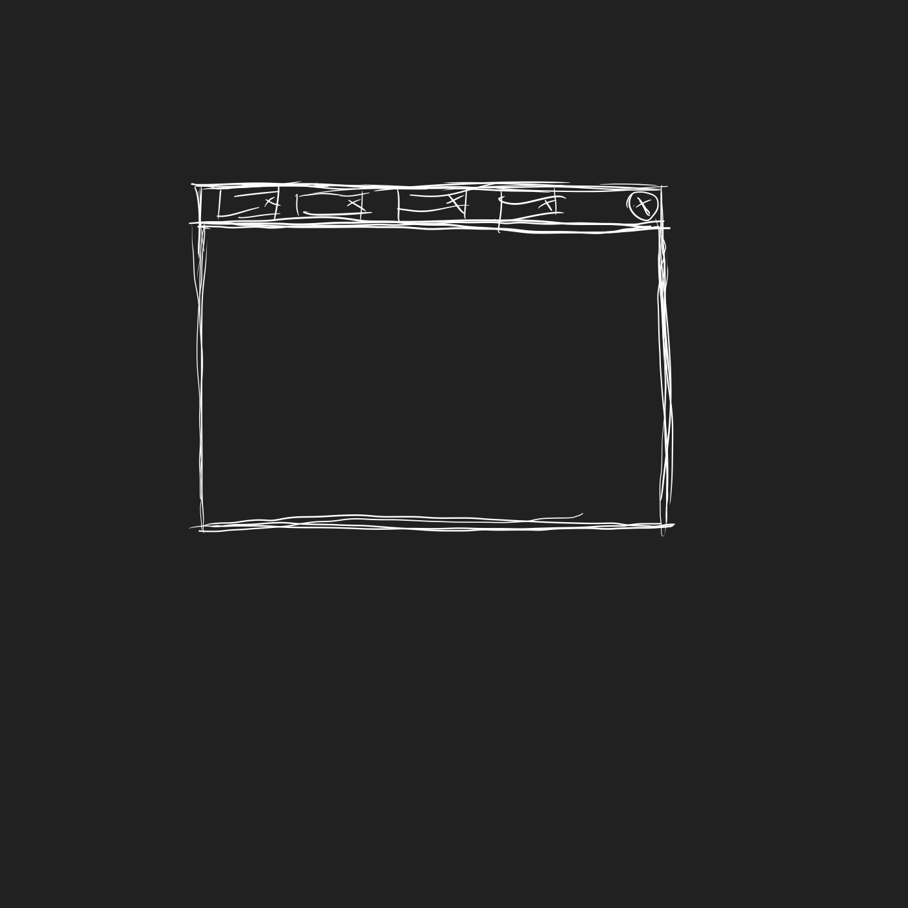
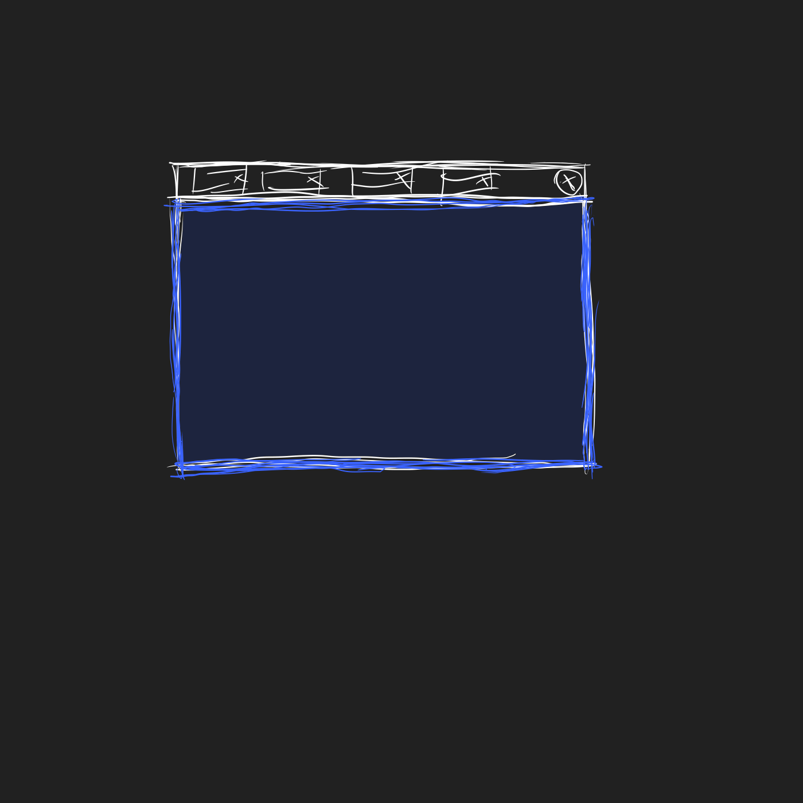
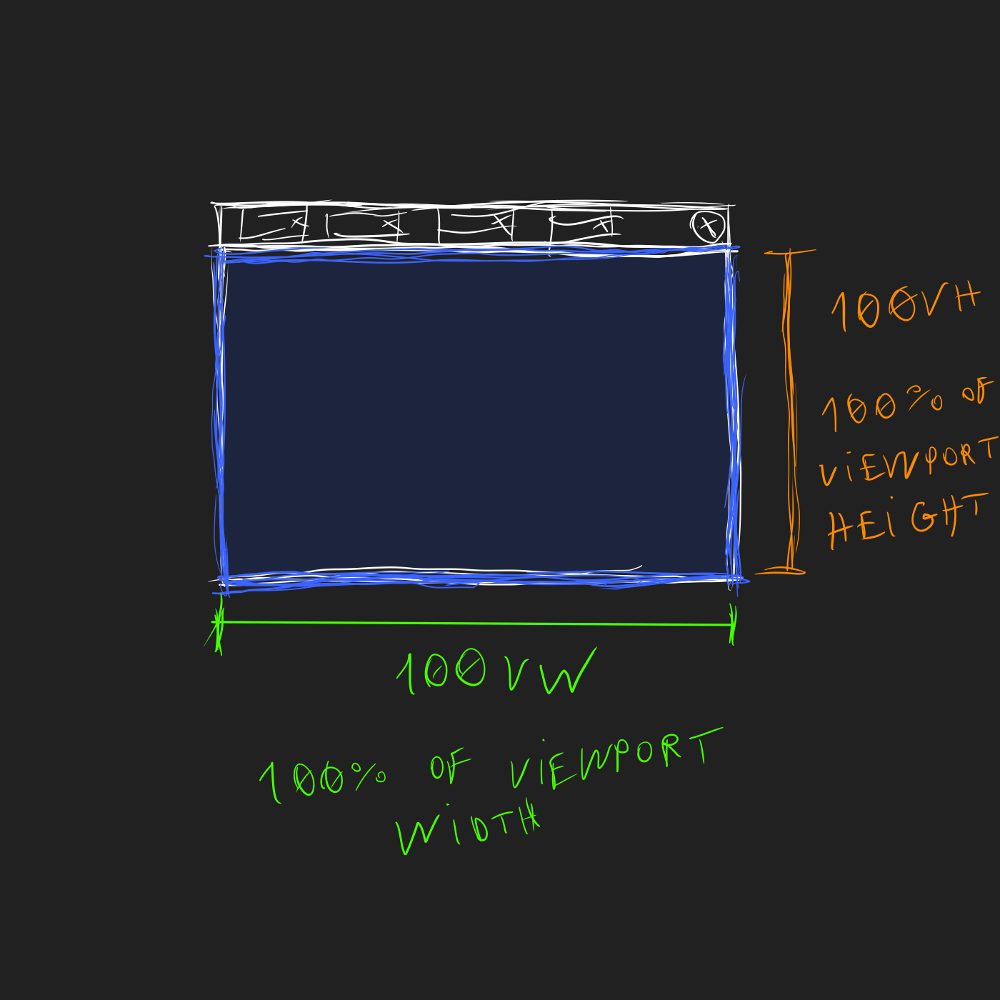
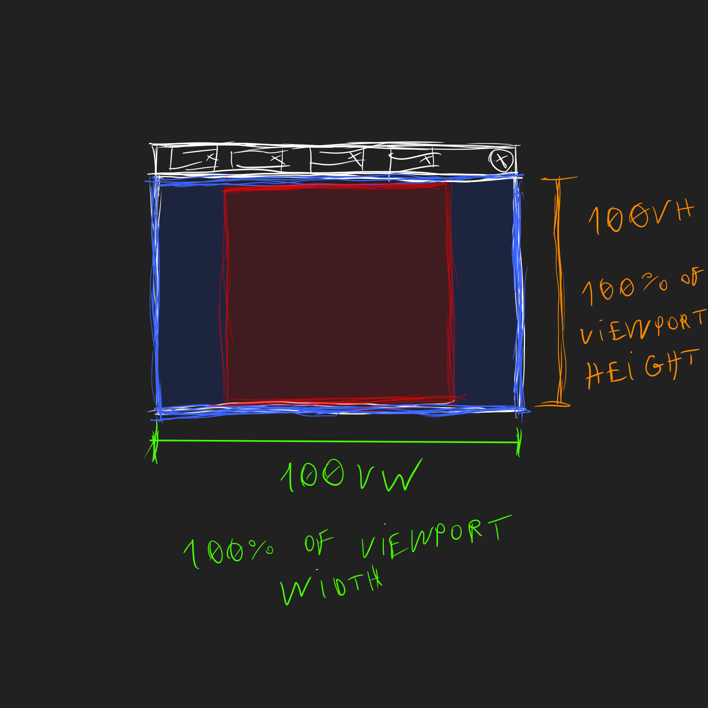

Hanabi CSS é um framework simples e minimalista de CSS e javascript para produzir páginas HTML estáticas. Eu desenvolvi para usar no meu site pessoal . Você pode checar a estética do Hanabi CSS lá.
O código fonte é aberto e está disponível no Codeberg.
Um exemplo de uma página html simples que usa Hanabi CSS é o arquivo [basic.html].
Unidade [vq]
[vq] é uma unidade de medida, presente no código fonte de hanabi CSS, no arquivo [main.css]
--vq: min(100vw, 100vh);
Para entender a proposta dessa variável, imagine o navegador onde uma página é visualizada:
Agora, com área de visualização de páigna destacada (nem toda a área do navegador é usada para renderizar a página)
A área de visualiazção de página (em azul) é um retângulo, cujas medidas dos lados estão destacadas
Para terminar, imagine um quadrado. O maior quadrado que cabe dentro desse retângulo azul:
[vq] é igual ao lado desse quadrado vermelho, ou, em outras palavras, ao menor valor dentre [100vw] e [100vh]. Eu uso essa variável para determinar a largura do espaço no qual o conteúdo da página será posicionado. O espaço restante à esquerda e à direita ficam vazios.
Cor de texto
Texto pode ter uma dentre 3 cores, definidas pelas seguintes variáveis:
--color-text-normal
--color-text-marked
--color-text-shadowed
Existem duas exeções à isso. Âncoras (ou links) e texto dentro de botões tem outras cores.
Cor de fundo
Existem 2 cores de fundo
--color-background-1
--color-background-2
Cor de coisas clicáveis
Um elemento clicável, como um botão, tem a cor definida pela variável
--color-clickable-normal
Quando o ponteiro do mouse está sobre esse elemento, ele tem a cor de
--color-clickable-selected
Lista
Aqui está um exemplo de lista
-
Interpreted
- Python
- Ruby
-
Compiled
- C
- C++
readme.html
Pôr um arquivo markdown chamado [README.md] no código fonte de um software é uma prática comúm para apresentar o projeto, descrevê-lo e dar instruções de como usá-lo. O formato markdown é tão eficiente em sentido de sintaxe que se assemelha muito a um arquivo de texto simples, e pode ser lido sem renderização, em um editor de texto.
Mas uma limitação do markdown é que, para incluir um vídeo, por exemplo, é necessário usar a linguagem HTML embutida no arquivo md, e depois converter tudo para HTML, para visualizá-lo.
Uma alternativa a isso é escrever a documentação inteira em HTML, embutir o Hanabi CSS no projeto e visualizá-la em um navegador.
Por exemplo, no diretório de meu projeto, adiciono o subdiretório [hanabi-css] (como um submódulo git ou simplesmente como um subdiretório normal), crio o arquivo [readme.html] para introdução e o subdiretório [doc] para o resto da documentação.
Essa alternativa tem a desvantagem de requerir um navegador para que os arquivos sejam lidos. Isso não é um problema, na maioria dos casos, mas o markdown continua sendo mais direto nesse sentido.